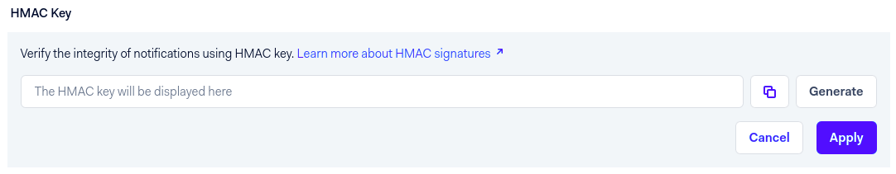
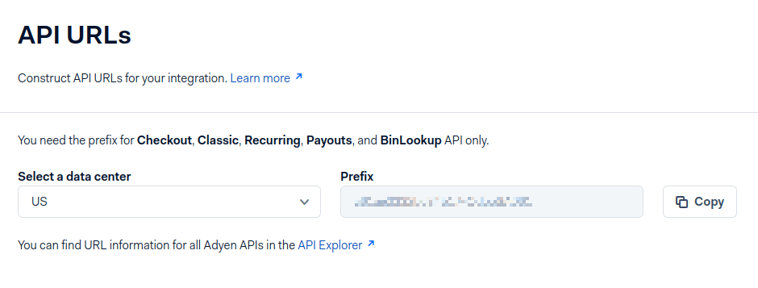

Adyen¶
Adyen is a Dutch company that offers several online payment possibilities.
See also
Note
Adyen works only with customers processing more than 10 million annually or invoicing a minimum of 1.000 transactions per month.
Configuration¶
See also
Credentials tab¶
Odoo needs your API Credentials to connect with your Adyen account, which comprise:
Merchant Account: The code of the merchant account to use with Adyen.
API Key: The API key of the webservice user.
Client Key: The client key of the webservice user.
HMAC Key: The HMAC key of the webhook.
Checkout API URL: The base URL for the Checkout API endpoints.
Recurring API URL: The base URL for the Recurring API endpoints.
You can copy your credentials from your Adyen account, and paste them in the related fields under the Credentials tab.
Important
If you are trying Adyen as a test, with an Adyen test account, head to . There, click on Adyen, enable Test Mode and enter your credentials in the Credentials tab.
API Key and Client Key¶
In order to retrieve the API Key and the Client Key, log into your Adyen account, go to .
If you already have an API user, open it.
If you don’t have an API user yet, click on Create new credential.
Go to and copy or generate your API Key. Be careful to copy your API key as you’ll not be allowed to get it later without generating a new one.
Now, head to and cody or generate your Client Key. This is also the place where you can allow payments to be made from your website.
HMAC key¶
In order to retrieve the HMAC Key, you’ll need to configure a Standard Notification webhook. For
this, log into your Adyen account then go to .

There, in , enter your server address
followed by /payment/adyen/notification.

Then enter . Be careful to copy the key as you will not be allowed to do it later without generating a new one.
You have to save the webhook to finalize its creation.
API URLs¶
All Adyen API URLs include a customer area-specific prefix generated by Adyen. To configure the URLs, proceed as follows:
Log into your Adyen account, then go to .
Copy the Prefix for your live Customer area (i.e., data center) and save it for later.
In Odoo, navigate to the payment provider Adyen.
In the Checkout API URL field, enter the following URL and replace
yourprefixwith the prefix you previously saved:https://yourprefix-checkout-live.adyenpayments.com/checkoutIn the Recurring API URL field, enter the following URL and replace
yourprefixwith the prefix you previously saved:https://yourprefix-pal-live.adyenpayments.com/pal/servlet/Recurring.
Note
If you are trying Adyen as a test, you can use the following URLs instead:
Checkout API URL:
https://checkout-test.adyen.comRecurring API URL:
https://pal-test.adyen.com/pal/servlet/Recurring
Adyen Account¶
Allow payments from a specific origin¶
To allow payment originated from your website, follow the steps in API Key and Client Key to navigate to your API user and go to , then add the URLs from where payments will be made (the URLs of the servers hosting your Odoo instances).

Place a hold on a card¶
Adyen allows you to capture an amount manually instead of having an immediate capture.
To set it up, enable the Capture Amount Manually option on Odoo, as explained in the payment providers documentation.
Then, open your Adyen Merchant Account, go to , and set the Capture Delay to manual.

Caution
If you configure Odoo to capture amounts manually, make sure to set the Capture Delay to manual on Adyen. Otherwise, the transaction will be blocked in the authorized state in Odoo.
Odoo doesn’t support the partial capture yet. Be aware that if you make a partial capture from Adyen’s interface, Odoo will manage it as if it was a full capture.
Note
After 7 days, if the transaction hasn’t been captured yet, the customer has the right to revoke it.
See also